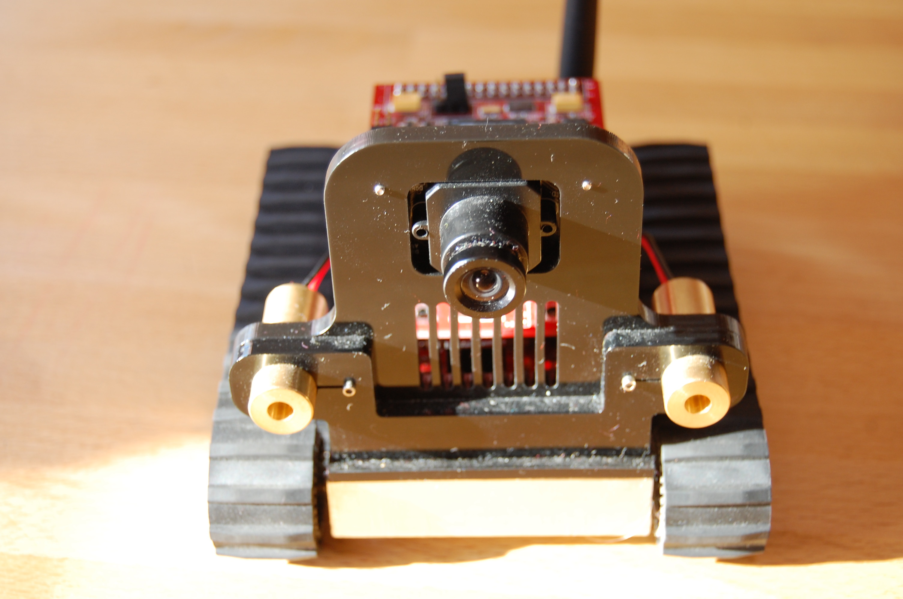

Introduction
Ezen az oldalon
az SRV1 Blackfin
robotról fogok írni, mely a
Surveyor cég
terméke.
Az alapfunkciók kipróbálása mellett az volt a célom,
hogy a kamera képének egyszerű továbbításán kívül, a képek alapján a
robot valamilyen elemi feladatot elvégezzen. Ezért a távirányítás
megvalósítása után fény- és színkeresést végeztettem vele.
Mivel viszonylag kevés ideig volt lehetőségem a robottal
foglalkozni, ezért inkább a programok befejezését tartottam
fontosnak, mint azt, hogy a kódok valódi működő környezetben is
kipróbáltak legyenek. Ebből következően a bemutatott megoldások
csupán továbbfejlesztést igénylő kiinduló pontoknak tekinthetőek.
The robot
Ez a robot önálló mozgásra képes lánctalpas szerkezet, melynek legfontosabb tulajdonsága, hogy lézeres távolságmérővel és egy kamerával van felszerelve. Ára 495 dollár, mintegy 100 ezer forint, szóval nem kifejezetten a kezdő hobbi robotosoknak vagy a gyerekeknek szánták.
A következő képeken a robot látható:
|  | |
Hardware and software
A Surveyor Blackfin robot többféle kiszerelésben is létezik,
különféle kiegészítők rendelhetők hozzá.
Az alaptípus egy nagyobb tenyérben elfér, ennek megfelelően a súlya a
masszív szerkezet ellenére sem
számottevő. A jármű fémkazetta formájú alsó részében helyezkednek el
a lítium-polimer
akkumulátorok, melyek nagyjából 4 órás használatot bírnak ki.
A töltést hálózati feszültségről egy külön táppal
lehet megoldani.
A fémdoboz két oldalán két-két tengelyen elől és hátul, fogazott,
oldalanként független meghajtású kerekek
helyezkednek el, amik gumi lánctalpakat hordanak.
A robot elején két oldalt található a két lézeres távolságmérő, mely
mintegy két méter távolságig képes érzékelni.
A fémdoboz fölött az elektronika egymásra épített nyomtatott
áramkörökből áll. A legfelső elemhez tartozik a kamera, melynek
fókusza kézzel állítható.
A robot hátulján a kommunikációhoz szükséges antenna látható.
Bővítési lehetőségként fölmerül egy navigációs áramkör használata, mely GPS-t, iránytűt és gyorsulásmérőt is tartalmaz (bal oldali kép). A robot fölszerelhető sztereó kamerával is (jobb oldali kép).
A robotot egy java nyelven írott konzol programmal lehet elérni
különféle operációs rendszerekről (Windows, Linux, Mac).
Íme a konzol felülete:
Valamint a robot futás közben:
A robot iPhone-nal és Google Androiddal is irányítható, ahogy az az alábbi videókból kiderül.
Az Androidhoz használt szoftver innen tölthető le.
Ezen kívül általános célű, fizetős robotcsomagok is képesek kezelni az SRV1-et: Roborealm, Cyberbotics Webots Microsoft Robotic Studio
Connection between the robot and the computer
A wi-fi modullal rendelkező robot ad-hoc wireless kommunikációval képes számítógéphez
csatlakozni. Erre azért van szükség, mert semmilyen kezelőszerv
nincs a roboton az On/Off/Charge kapcsolón kívül, vagyis a beépített
parancsokat, a feltöltött programot is csak külső számítógépről
lehet elindítani.
A kapcsolat kiépítéséhez a számítógépnek vezeték nélküli
kommunikációra alkalmasnak kell lennie, akár egy beépített, akár egy
bővítőkártya segítségével. Más szóval wi-fi eszközt kell
tartalmaznia. Az ad-hoc wireless kapcsolat beállítása nem különbözik
lényegesen a wi-fi routerekkel való, már megszokott
kapcsolatépítéstől, a különbség csupán az, hogy a router helyett
ezúttal két számítógép eseti (ad-hoc) közvetlen kommunikációját
valósítjuk meg. Ugyanakkor mivel ez egy lényegesen ritkábban
használt funkció az operációs rendszerek kevésbé támogatják. Nekem
is nem várt kellemetlenségeket okozott a beállítása.
Mivel linuxot használok (Mandriva 2010), ezért az ehhez szükséges lépéseket írom le.
A Windows-os
beállításokról itt
és itt lehet többet megtudni.
A vezeték nélküli kapcsolódáshoz be kell állítani a kapcsolódási
módot, a hálózat azonosítóját és a gép IP címét.
Ehhez root jogokra van szükség, mivel a gép hálózati
beállításait kell megváltoztatni a network,
az iwconfig, és az ifconfig parancsokkal.
Nem feltétlenül szükséges, de mivel nekem így vált be, ezért első
lépésként lekapcsoltam a teljes hálózatot.
/etc/init.d/network stopEzután az iwconfig-gal megadtam az ad-hoc kapcsolódási
módot, és a hálózat azonosítóját, mely a robot
esetében SRV1. Mivel a wireless interfész az én
gépemen wlan0 névre hallgat, ezért a parancs az alábbiak szerint
nézett ki:
iwconfig wlan0 mode Ad-Hoc essid SRV1Következő lépésként meg kell adni a gép IP címét
az ifconfig paranccsal. Célszerű (ellenkezőjét nem is
próbáltam) a robot IP címével azonos tartományból választani IP címet
a vezeték nélküli interfésznek. Mivel a robot IP címe
169.254.0.10, ezért ez a parancs így nézett ki:
ifconfig wlan0 169.254.0.12Végül ha már be van kapcsolva a robot érdemes megpróbálni csatlakozni
hozzá. Ezt a telnet paranccsal lehet megtenni az általam használt
robotnál a 10001-es porton keresztül. Ehhez már elég egy
hagyományos felhasználó is, vagyis nincs szükség root-ra.
telnet 169.254.0.10 10001Ezután én többnyire visszakapcsoltam a vezetékes hálózatot az ifup paranccsal.
ifup eth0Ha minden jól ment és a telnet parancs sikeres volt, akkor a robot a
következőket írja ki a képernyőre:
##Version - SRV-1 Blackfin w/picoC 0.91 13:12:45 - Jan 20 2010A megjelenő promptnál V betűt írva pedig kiírja a verziószámot.
Ha ezt megtörtént, akkor a csatlakozással sikerrel jártunk.
(A telnet programból a kilépést egy kill
paranccsal oldottam meg, mivel ilyen értelmű robotutasítást nem találtam.)
Nehézséget okozhat, hogy ha a robot flash memóriájába korábban programot töltöttünk, akkor a csatlakozás előtt az fut le. A futás befejezése előtt nem lehet a robottal kommunikálni. Néha úgy tűnik, hogy a robot megáll, mert elkészült a betöltött program futtatásával, de amikor kapcsolódni próbálunk, akkor ismét elkezd dolgozni. Egy idő után azért befejezi a futást, és végre használhatjuk.
Direct movement commands
Ha a robothoz a fent leírt módon csatlakoztunk, akkor lehetőségünk van a beépített parancsok futtatására. Ezek listája ezen az oldalon nézhető meg.
Néhány érdekesebb parancs:
Az 1-9 billentyűk hatására a robot mozogni
kezd, a billentyű elhelyezkedésének megfelelően. Tehát a 8 az előre, a
2 a hátra, a 4 a fordulás balra, a 6 a fordulás jobbra, az 5 a
megállás. Mivel a parancsok a következő parancsig mozgatják a
robotot, ezért először ezt az utóbbit jegyezzük meg! A 7, 9, 1, 3
billentyűk mindkét tengely mentén elmozdítják az SRV1-et, vagyis
a meghatározott irányba ír le egy kört a robot.
Az l-lel be-, az L-lel ki lehet kapcsolni a lézert. Az R-rel a
legközelebbi tárgy távolságát lehet megmérni. Ehhez a robot mindkét
oldalon be és kikapcsolja a lézert, egymás után. Az I billentyűvel a
robot elkészít egy fényképet, amit JPEG formátumban küld vissza.
A parancsok között egészen összetettek is vannak, melyek neurális hálót használnak vagy például egy szín követését végzik, ahogy az alábbi videón is látható:
Programming in PicoC
Amellett, hogy egy-egy parancsot interaktív módon végre lehet hajtani, a PicoC nevű, C-szerű beépített nyelven kisebb-nagyobb programokat is meg lehet írni és futtatni. Ezáltal robotunk önállóvá válhat. A nyelv egy referenciája itt található.
Az ELTE-n, ahonnan ez a robot is származik már többféle PicoC program
készült el,
amiről ezen
az oldalon lehet olvasni.
Az alábbi példa a lézeres távolságmérő helyett ultrahangos robotot
feltételez. Ezen új szenzorok visszaadott értékeitől függően a robot
megváltoztatja haladási irányát.
Control through wireless connection
Mivel a célom az volt, hogy a robot által készített kamera képét a
számítógépen dolgozzam fel és ez alapján adjak utasításokat a
robotnak, azaz a teljes irányító program a számítógépen fusson,
ezért a PicoC nyelvű programok írása helyett inkább a robot-gép
kommunikáció megvalósítására koncentráltam.
Ennek érdekében olyan
eljáráskönyvtárt kerestem, amely C/C++ nyelven függvényhívások
formájában képes a robotnak utasításokat átadni, a kamera képét
visszakapni. Ezen kívül a robot által készített képek
feldolgozására egy általános célú képfeldolgozó könyvtárat
szerettem volna alkalmazni.
The Surveyor Blackfin robot library
A robot és a számítógép között kapcsolat
kiépítésére egy olyan eljárásgyűjteményre van szükség, mely a
socketen, azaz hálózati csatlakozáson
keresztül képes a robotnak a közvetlen működésnél felsorolt
parancsokat elküldeni és az érkező válaszokat fogadni,
feldolgozni. (Itt egy leírás socket programozásról magyar nyelven.)
Ehhez épp megfelelőnek tűnt a City University of New York Brooklyn
College-ában
készített Surveyor
Blackfin szoftvercsomagja, mely innen
tölthető le. A néhány forrásfájl könnyen illeszthető már létező
projekthez, akár úgy is, hogy egy önálló könyvtárat csinálunk
belőle. Én ez utóbbit választottam.
Az eljárások ugyan nem fedik le az összes lehetséges robotfunkciót, de
ez is bővíthető, a távolságmérés eljárását például én írtam
meg. A bővített
forrásfájl itt, a header
itt nézhető meg.
A használathoz mindössze arra van szükség, hogy a robot IP címét és az
eléréshez használt portot megadjuk a forráskódunkban az alábbi módon:
#define ADDRESS 169.254.0.10:10001
Ha itt a a valódi cím helyett NULL-t használunk, akkor a
robot címét az SVR_ADDRESS környezeti változóban keresi a
program. Ezt pedig így lehet beállítani (én ezt a módot használtam):
export SVR_ADDRESS=169.254.0.10:10001Íme egy példaprogram, ami a robot eljárások működését mutatja.
Először létre kell hozni a Surveyor osztály egy példányt, ezúttal
robot néven. Ezután a robotkommunikáció debugolásának
szintjét alacsonyra állítjuk, majd lekérjük a verzióinformációt, amit
kiírunk a képernyőre. Majd a robot kap egy mozgási parancsot, ami a
bal és a jobb lánctalp sebességét határozza meg, valamint a
mozgás idejét, 10 milliszekundumos egységekben. Mindhárom értéket egy
bájton lehet meghatározni, emiatt a sebesség -128 és 127 között
változhat (értelemszerűen a negatív számok hátrafelé mozgást
jelentenek), míg az idő 0 és 255 között. A 0 érték esetén mindaddig
fut a parancs, amíg új mozgási parancs nem érkezik.
A fenti példában a robot
egy másodpercig fog félgőzzel helyben jobbra fordulni.
Ezután beállítjuk a videó módot, vagyis a robot kamerájának a
felbontását. A fent szereplő 320*240-es képméret igazából 640*480,
mivel a konstans által küldött parancs, ezt az értéket határozza
meg. Bár könnyű lenne azt mondani, hogy hibás a Blackfin csomag,
valószínű, hogy egy korábbi változatban a konstans értékek mást
jelentettek.
A képméret beállítása után a robot készít egy fényképet, majd elmenti
a munkakönyvtárban test.jpg néven.
Érdekes módon a robot bekapcsolása utáni első futáskor rossz a kép, az
eredmény elkenődött, mintha gyorsan pörgött volna
a robot az elkészítés közben. A második hívástól azonban javul a helyzet.
A kép minősége ekkor sem kiemelkedő, egy egyszerű webkamera képének felel
meg.
Remote control
Az eddigi ismeretek felhasználásával már egyszerűen készíthető egy
olyan program, amellyel a robotot távirányítással lehet
vezérelni. Ehhez csupán a billentyűzetről kell beolvasni a következő
mozgási parancsot, amit én a curses standard
eljárásaival oldottam
meg. A feladatot elvégző kód lényegi része így néz ki:
A curses eljárások inicializálása után ciklikusan várja a robot
a következő parancsot. Az iránybillentyűk lenyomásakor megfelelően
beállítja a lánctalpak mozgásának irányát, ami a
robot.drive eljárás meghívásakor jut szerephez. A mozgás
ideje attól függ, hogy a robot egyenesen halad-e vagy fordul. Az
utóbbi esetben a robot csak rövid ideig mozog, hogy ne forduljon túl
nagy szögben, legyen idő más mozgási parancsot kiadni.
A sebesség változóit csupán a q billentyű lenyomása
állítja vissza 0-ra, enélkül a robot folytatja a megkezdett
mozgást.
Ha a beállított 100-nál kisebb, 50-es sebességértékkel próbálkoztam,
akkor a robot nem mindig tudott haladni. Volt olyan nem túl mély padlószőnyegű
szoba, ahol csak a motor hangját lehetett hallani, de a robot
minimálisat mozdult.
A p billentyű hatására a robot a korábban ismertetett
módon készít egy fényképet.
Az l segítségével lehet a lézert be- és
kikapcsolni.
Végül az r hatására a robot az általam a Blackfin
bővítéseként írt getDistanceFromLasers eljárást hívja
meg, és az eredményt kiírja a
képernyőre. A getDistanceFromLasers nagyon hasonló a
csomag többi eljárásához: elküldi a lézeres távolságmérés parancsát a
robotnak és a választ némi hibakezeléssel után feldolgozza.
Sajnos akadálykikerülésre, pláne térképkészítésre a lézer kevéssé
használható, mert lassú és pontatlan. A mérés során a robot
felvillantja a két lámpát, majd számol. Ez másodpercekig is
eltart. Emiatt a méréshez célszerű a robotnak megállnia. Ezen kívül az
eredmény még ideális körülmények között, azaz nem túl távoli, merőleges, egyszínű fal
esetében, álló pozícióban is túl nagy szórást mutat ahhoz, hogy
használható lehessen. Íme egy mérési sorozat ennek igazolására, centiméterekben: 37,
38, 28, 38, 28. Ráadásul a robot többször is sikertelen mérést jelez vissza.
A program teljes forráskódja megnézhető itt.
The OpenCV library
Miután sikerült a robotot irányítani, és a legfontosabb parancsokat a Blackfin csomagból kipróbálni, érdemes kibővíteni a robotot a kamera képének feldolgozásával. Ehhez a robot direkt parancsai és erre építve a Blackfin csomag is lehetőséget nyújt, de én valami általánosabb célút szerettem volna használni/fejleszteni, ami nem függ az éppen használt robottól. (Ettől még persze alkalomadtán érdemes lesz a robot saját képfeldolgozási lehetőségeit is kipróbálni.)
Ennek érdekében
az openCV
általános célú képfeldolgozási eljáráscsomagot
használtam. Az OpenCV nevében szereplő CV a computer vision-re, azaz a
gépi látásra utal, az open, pedig arra, hogy nyílt forráskódú. Ezen kívül
érdemes tudni, hogy ingyenesen hozzáférhető. A
csomagot több mint egy évtizede az Intel kezdte el fejleszteni, majd
pár éve a Willow Garage nevű robotfejlesztő cég vette a
gondozásába.
Ennek a változásnak az a jótékony hatása, hogy a csomag ismét
fejlődésnek indult, ami abból is lemérhető, hogy több millióan
letöltötték, és
egy
O'Reilly könyv is megjelent róla.
A Willow Garage feltett szándéka, hogy az OpenCV-t minél inkább
alkalmassá tegye robotos projektben való használatra, vagyis jelenleg
úgy tűnik, hogy érdemes ezzel a könyvtárral foglalkozni.
Itt most nem célom az OpenCV részletes bemutatása, hiszen
- arról majd remélhetőleg egy másik oldal fog szólni,
- én sem ismerem kellően részletesen.
Nem, a két pont között nincsen ellentmondás, hanem a csomag rendkívül összetett.
Itt csupán a továbblépéshez szükséges egyszerű, "robotmentes" példát mutatok be, az openCV környezetben értelmezhető "Helló, világ!" programot, ami egy kép betöltése és megjelenítése. Az első openCV programunk tehát így nézhet ki:
Első lépésként a paraméterként megadott képet tölti be a
program (cvLoadImage), amennyiben a sok kezelt formátum
egyikeként ismeri föl.
Ezután létrehoz egy Example1 nevű ablakot
(cvNamedWindow), melyben a cvShowImage
függvénnyel megjeleníti az előbb betöltött
IplImage-et.
A cvWaitKey(0) utasítás hatására végtelen ideig vár
billentyűleütésre a program és ha ez megtörténik, akkor
a cvReleaseImage megszünteti a képet,
a cvDestroyWindow az ablakot.
A program lefordításához nem túl meglepő módon szükséges az, hogy az include könyvtárak
között szerepeljen a highgui.h header fájlt
tartalmazó könyvtár.
Ezen kívül az OpenCV-t használó programok futtatható változatának
összeállításához a cv,
a cvaux, a cxcore és a highgui
könyvtárak linkelése szükséges.
A not-so-secret agent
Az eddigiek alapján a távirányító program viszonylag kis módosításával megoldható, hogy a robot mozgása közben a kamera képét is folyamatosan mutassa. Ezáltal a robot nevének megfelelően egy valódi felderítő ügynökrobothoz jutunk.
Ehhez a korábbi eseti fényképmentés helyett a ciklus minden futása
során elkészítjük és elmentjük a fényképet és az előző részben megmutatott
eljáráshoz hasonló módon megjelenítjük azt.
Ha az elkészített képeket különböző fájlnévvel látjuk el, akkor az
eredményből később film is készíthető.
Egy ilyen futás eredménye tekinthető meg a két alábbi videóban, külső és belső nézetből egyaránt. Sajnos a roboton eléggé alacsony másodpercenkénti képfrissítéssel.
A program forráskódja itt érhető el.
Ismét érdemes megjegyezni, hogy a Blackfin robot eljárások között
szereplő setVideoMode-hoz tartozó konstansnevek
félrevezetőek. A MODE160x128 érték megadásával
valójában a 320*240-es alapértelmezett képméretet használjuk. Ehhez
hasonlóan eggyel nagyobbat jelent a több konstans is. Valószínűleg
az idők során megváltozott a robot kamerájának felbontása, és a
beállításhoz használt parancsok, amit az eljáráskönyvtár nem követett.
Locating light
Mivel a távlati cél egy teljesen autonóm robot elkészítése, ezért
a távirányításhoz képest továbblépés, ha a robot maga hoz
döntéseket mozgásával kapcsolatban.
Ennek egy egyszerű példája a következő fénykereső robot.
A fénykeresés természetesen a képek feldolgozásával valósul meg, és
igazából megfelelő tulajdonságú képpontok kiválasztásával működik.
A használat során a findColor eljárás egy zseblámpa fényének
megfelelő színű képpontokat keres a képen, és visszaadja, hogy a
robot középvonalától, vagyis aktuális haladási irányától balra és
jobbra mennyi "fényszínű" képpont látható.
A képfeldolgozó eljárás lényegi része így néz ki:
A fényes képpontok meghatározásához az eljárás az előzetesen
imageHSV-be másolt képet a hagyományos RGB (vörös-zöld-kék) színtérből HSV (hue-saturation-value, azaz szín-telítettség-érték)
színtérbe konvertálja a cvCvtColor függvénnyel (helyben
dolgozva). Ezt a konverziót nagyon gyakran
alkalmazzák képfeldolgozás esetén, mert a fényviszonyok
változásának ez az új reprezentáció jobban ellenáll, mint a
megszokott RGB hármas.
A HSV színtérről itt lehet bővebben olvasni. Dióhéjban annyit érdemes tudni, hogy az első komponens felel a szín értékéért, az összes létező színárnyalat ebben az egy számban jelenik meg, szemben az RGB reprezentációval. Az S-sel jelölt telítettség a szín élénkségét határozza meg. Az érték a fényerőt adja meg, azaz hogy milyen világos az adott képpont.
Ezután az eredményül előálló kép pontjait mind feketére
állítja a cvZero függvény, majd a fő eljárás ciklusban végiglépked a
képpontokon, és ahol az előre meghatározott HSV értéktartományokon
belül eső képpontot talál ott az eredményképet fehérre állítja.
A képpontok olvasásához használt függvényekről
(H_PIXEL, S_PIXEL, V_PIXEL) annyit érdemes tudni,
hogy az i, j koordinátán lévő képpont H, S, V értékeit adják vissza.
A program megvizsgálja, hogy ezek az értékek a konfigurációs fájlban előzetesen
megadott tartományonkénti alsó és felső határok közé esnek-e. Ha
igen, akkor a képpontot fényesnek ítéli és az eredményképen a SET_PIXEL_V1
függvénnyel fehérre állítja a megfelelő képpontot.
A rajzolással egy időben az eljárás a Colorpixels típusú paraméter
left és right mezőjét is módosítja, hogy befejezéskor
a két érték a kép bal és jobb széléhez közelebb lévő fényes
képpontok számát adja vissza.
A fő eljárásnak ezután könnyű dolga van. Ciklikusan meghívja a
fénykereső eljárást, és a visszakapott Colorpixels
értékek alapján, ha elégséges képpontot érzékel, akkor a fényt követve balra vagy jobbra fordul, mint egy
Braitenberg-jármű. (Az
elégséges képpontok számát egy konfigurációs fájlból olvassa be a program.)
Ennél persze a valóságban összetettebb irányításra lenne szükség. Lehetne például egy összefüggő, körszerű foltot keresni a képen, ami a zseblámpát kiemelné a környezetéből, és egyúttal csökkentené annak az esélyét, hogy az ablakból bejövő vagy a padlón tükröződő fény megzavarja a robotot, ami bizony előfordulhat. Ezen kívül a robot mozgása egyáltalán nem függ a fény képbeli elhelyezkedésétől, mennyiségétől. Ezek figyelembe vétele finomabb mozgást eredményezne.
A kész robot futása, ismét külső és belső nézetből, alant látható. A belső nézet a kamera képe mellett egyúttal a képfeldolgozás eredményét is mutatja.
A videókon látható az is, hogy a szőnyeget fölszedtem ehhez a
feladathoz. Ennek az az oka, hogy a bal hátsó kerék rögzítése idővel
kicsit kilazult, emiatt a lánc hajlamossá vált lecsúszni a kerékről,
amikor nagy súrlódás érte. Ez forduláskor nagy tapadású talajon, így
például szőnyegen következett be leggyakrabban.
Mindenesetre meglepő, hogy kevés használat után is ilyen probléma
jelentkezhet, bár lehet, hogy egy egyszerű csavarozással a jelenség megszüntethető.
A robot működésének kulcsa a H, S, V alsó és felső korlátok megfelelő
megválasztása. Jelen esetben a konfigurációs fájl a következő értékeket tartalmazza:
Ez annyit jelent, hogy tetszőleges színű (a 0-360 terjedő tartomány
minden értéke megengedett), alacsony telítettségű (maximum 10 a
lehetséges 255-ből), és világos (minimum 220 a lehetséges
255-ből) képpontokat talál jónak a program.
A használt megoldás nem általános célú, ha változik a környezet, a
fényviszonyok, akkor az értékeket módosítani kell. Egy valódi, ipari
környezetben alkalmazott robot esetén ez nem lenne elég.
A fénykereső főprogramja
itt a képfeldolgozás
pedig itt
nézhető meg. A teljes kód letölthető innen.
Locating light
Az utolsó feladat során a Surveyor Blackfin robotnak egy nagyjából
egyszínű, a környezetétől elütő színű szőnyegen kellett maradnia,
miközben folyamatosan mozog.
Ehhez az előbb megismert színkeresést volt célszerű használni egy új
HSV paraméterezéssel.
Ezúttal a szín értékek nem lehetnek bármilyenek, bár a használt
[80,250], zöldeskék közepű színtartomány még mindig nagyon tág.
A telítettség és az érték az előzőhöz képest megengedőbb lett:
Ez a fajta szűrés nem csak a szőnyeget találja meg, hanem sok minden
mást is. Mivel a szőnyeg színét felhasználó eljárás összesen annyit
tesz, hogy a színkeresés eredményeként kapott képen alulról elkezdi
megszámolni a találatokat, ezért nem okoz problémát, hogy a kép felső
részében is sok helyen "lát" szőnyeget a robot.
A találatok alulról
felfelé számolása mögött az az ötlet rejlik, hogy ha a robot sok
szőnyegszínű képpontot lát, akkor még mehet előre, ha pedig keveset,
akkor hamarosan fordulnia kell. A megtehető távolságot ily módon
becsülő eljárás így néz ki:
A visszaadott értékek alapján a robot az alábbi kódnak megfelelően dönt, és megy tovább előre vagy elfordul balra:
A program kódja
letölthető innen.
A kész robot futása külső és belső nézetből lejjebb látható. A
belső nézethez ismét hozzá tartozik az előfeldolgozás eredménye, amin
jól látható, hogy a szőnyegen kívül sok más helyen is találatot jelez
az algoritmus. Ettől függetlenül a robot viszonylag megbízhatóan működik.
Experiences and future work
Bár elég kevés időm volt a Surveyor Blackfin-nel kísérletezni,
úgy érzem, hogy sok érdekes dologra sikerült rávennem a robotot.
A használat során észlelt furcsaságok (lejáró lánc, hibás nyitókép,
sokáig tartó inicializálás) némi gyakorlás után szerintem
kiküszöbölhetőek.
A Blackfin eljárások jelen formájukban már elégségesek a robot
irányításához, de tovább csiszolhatók.
A robot megfelelő megoldás lehet bejárási és térképezési
feladatokhoz, különösen a sztereó kamerával kiegészítve. Az általános
használatot azonban nehezíti, hogy a robot két szempontból sem túl gyors.
Egyrészt a lánctalpon való haladás többnyire kisebb sebességekre
képes, mintha kerekeket alkalmaznánk.
A komolyabb problémát azonban a processzor és a kommunikáció sebessége
okozza. A fényképezés és az eredmény továbbítása leköti annyira a robotot,
hogy csupán néhány kép készülhet el másodpercenként, ami behatárolja
az alkalmazási lehetőségeket. Elképzelhető persze, hogy a képméretet
állítva, a kép továbbítását optimalizálva ezen még lehet javítani.
A lassabb haladás ellenére a lánc előnye, hogy a robot kisebb
akadályokon át tud mászni.
Szabad térben nem próbáltam ki a robotot, de valószínűnek tartom, hogy
egyszerűbb tereppel is elboldogulna. Nyilván ekkor a fokozódó
piszkolódás jelenthet gondot.
Mivel a jármű eléggé erős, ezért passzív szemlélőből aktívvá
válhat, kisebb tárgyakat el tud tolni, így rendezési feladatokra
alkalmas lehet. Ettől függetlenül jó volna, ha tartozna hozzá egy
robotkar, mellyel többféle probléma megoldására lehetne
használni.
Érdekes lenne, ha a robot repülhetne. Ez nem csak fikció, a Surveyornak van egy YARB (Yet Another Robotic Blimp, azaz Egy Újabb Robot Léghajó) nevű robotja, ami így néz ki:
A látványos szerkezetet egyelőre csak beltérben lehet kipróbálni, amiről a robotika.blog.hu-n is említett videó alapján az elefánt és a porcelánbolt jut az ember eszébe.
Általános tapasztalat az is, hogy a képkezelő eljárásokat érdemes felkészíteni arra, hogy a robot által korábban fölvett képen vagy képfolyamon is működjenek. Ezáltal a robot hiányában is lehetne fejleszteni, tesztelni, a tanuló algoritmusokat behangolni.
Useful links
- Az oldalon szereplő összes saját forráskód egyben innen tölthető le.
- Egyéb robotos oldalaim
- NJSZT Robotika szakosztály, ahol többen segíthetnek, ha valamilyen robotot szeretnél építeni.
- ELTE Surveyor Blackfin oldala
Ha ismersz még ide tartozó érdekes oldalt, különösen magyar robotikai eredményeket, kérlek, írd meg! Természetesen építő jellegű kritikát is szívesen fogadok.